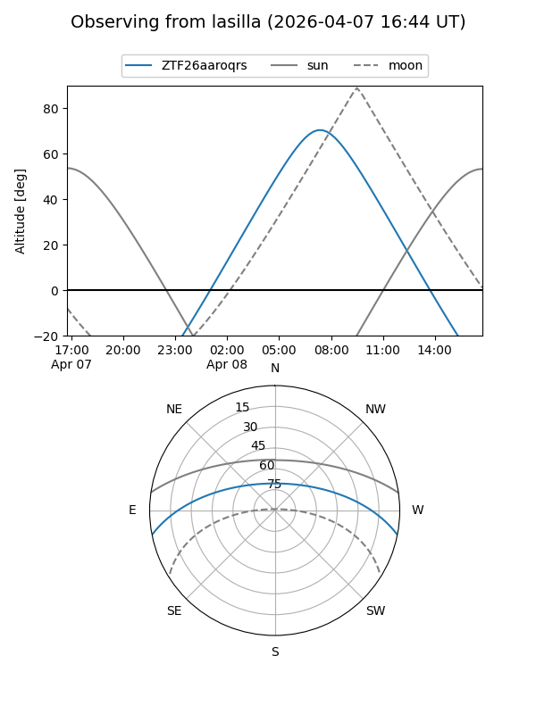
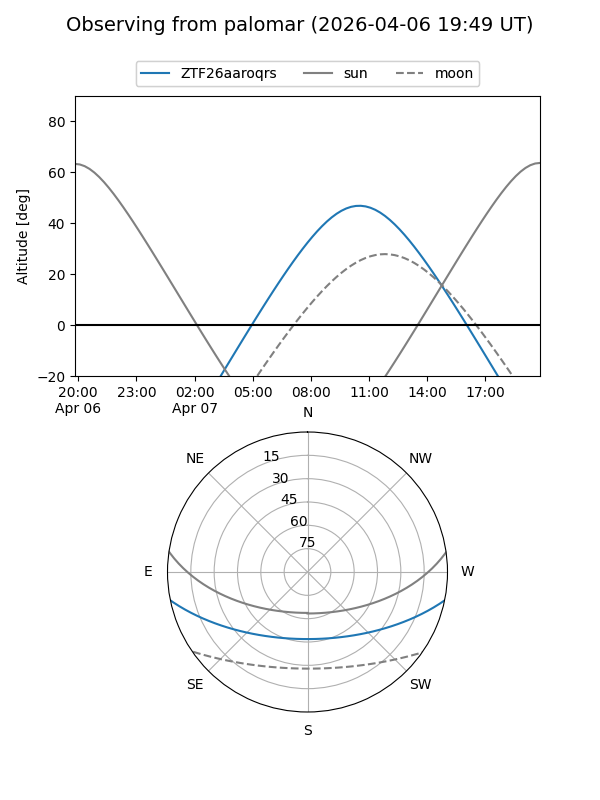

ZTF26aaroqrs
Target ZTF26aaroqrs at 2026-04-07 11:11
Aliases and brokers:
FINK: link
Lasair: link
ALeRCE: link
alt names
ZTF26aaroqrs (ztf,fink_ztf)
Coordinates:
equatorial (ra, dec) = 236.0408,-9.67664
equatorial (HMS+DMS) = 15:44:09.79,-09:40:35.89
galactic (l, b) = (357.6466,+34.27000)
Flags:
Photometry:
last ztfg=18.98
1 ztfg detections
Lightcurve
Visibility


Additional plots